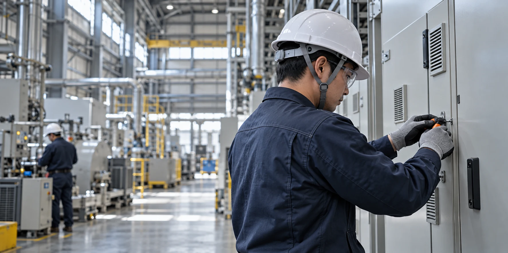

大手メーカーの
工場が中心。
工場を舞台とした、大規模な電気工事に携わっています。
GAINA ELECTRIC — RECRUITING
電気工事の実務経験5年以上の方へ
大手メーカーの工場を中心に、
大規模な電気工事を幅広く。
その経験を、ガイナ電気の現場で。
有限会社ガイナ電気 ／ 関西一円

01 / WORKING FIELD
働く現場を知るガイナ電気が主に手がけるのは、工場の電気工事。
ものづくりの現場と、あなたの経験が出会う場所です。
大手メーカーの工場が中心。
大規模な工事を幅広く行います。
まれに出張もあります。
図は働く現場のイメージです。特定の工場や設備、施工範囲を示すものではありません。
02 / OUR WORK
実際にどんな仕事をするか有限会社ガイナ電気は、大手メーカーの工場をメインに、大規模な電気工事を幅広く行っています。
これまでどのような現場で、どのような工事をしてきたか。まずはあなたの経験をお聞かせください。
担当する作業や必要な経験についても、採用窓口へお問い合わせください。
03 / PROJECT & AREA
現場の規模と働くエリア工場を舞台とした、大規模な電気工事に携わっています。
活動エリアは関西一円。出張を伴う場合もあります。
現場の人数や工期など、詳しい働き方はお問い合わせください。
04 / LET’S TALK
採用についてのお問い合わせ「どんな工事が多い？」「自分の経験を活かせる？」
気になることを、まずはメールでお聞かせください。
応募を希望する方も、こちらからご連絡いただけます。
まずは、知ることから。
ご質問と、これまで経験した工事の内容を、分かる範囲でお知らせください。
メールで相談する ↗応募を希望する方はこちら ↗メールアプリが開きます。開かない場合は下記へご連絡ください。
i.co_ta@icloud.com給与など、掲載のない条件についてはお問い合わせください。
01 メールで相談・応募
→02 仕事内容・条件を確認